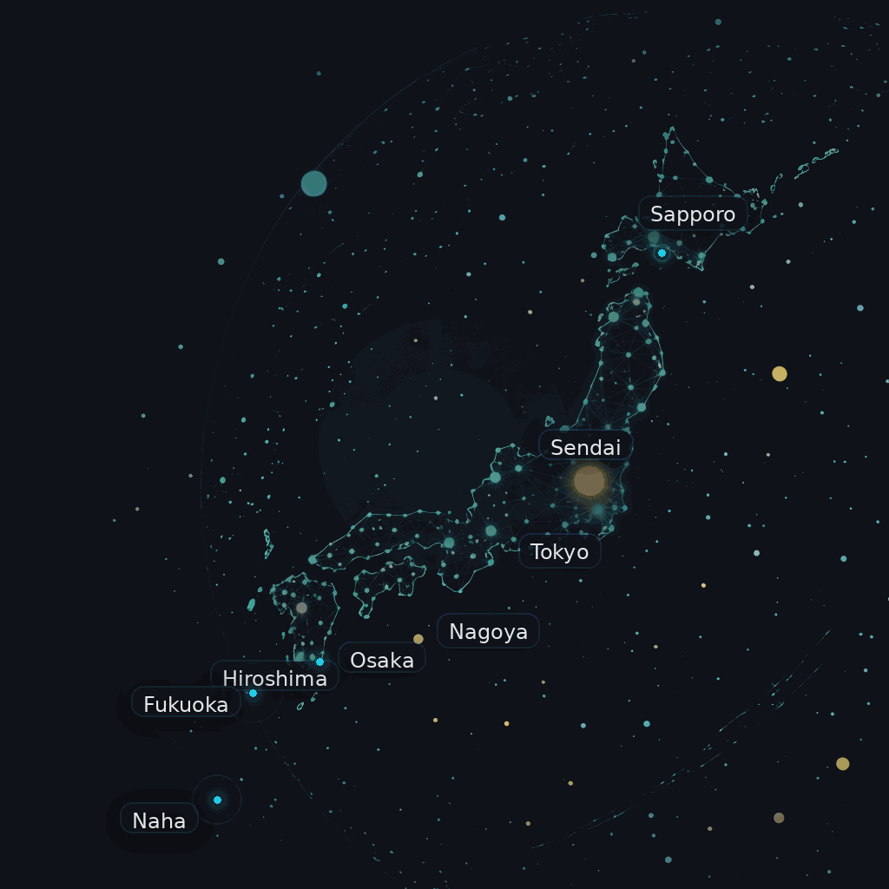

IT Support
User support that works for bilingual environments.
Day-to-day support, remote troubleshooting, account handling, and onsite follow-through when local action is needed.
Learn more →Thinkers GK supports offices, projects, users, infrastructure, and IT asset work across Japan. One accountable partner. Clear English and Japanese communication. Practical delivery on the ground.
AI-assisted intake + senior review. We translate business intent into clear operational scope in both English and Japanese.
Tokyo-based coordination with vetted regional teams across Japan. We stay accountable while the work gets done on the ground.
Chain-of-custody, destruction certificates, and executive reporting so your Japan operations stay compliant and auditable.
Day-to-day support, remote troubleshooting, account handling, and onsite follow-through when local action is needed.
Learn more →Deployments, swaps, installs, surveys, and coordinated work on the ground.
Learn more →Assessments, vulnerability handling, response support, and documented security practices.
Learn more →Asset coordination, tracking, documentation, and secure end-of-life processing.
Learn more →These are the clearest entry points for companies that need practical progress in Japan: urgent endpoint refresh, legacy modernization planning, and controlled AI operations.
A practical path off aging Windows 10 fleets: audit, rollout plan, user migration coordination, onsite swap support, and secure ITAD.
A paid diagnostic for teams stuck between spreadsheets, legacy systems, and fragmented SaaS. We map the current state and define the first bridge forward.
A 30-day pilot for companies that want operational AI with approvals, auditability, kill switches, human override, and safe workflow automation.
Companies use Thinkers GK when they want less fragmentation between users, vendors, sites, projects, and reporting. We keep the work moving and the picture clear.
Every interaction your team has with us — tickets, status updates, project reports, escalations — is delivered cleanly in whichever language each stakeholder needs. Here's the same incident, viewed from both sides.
All 14 affected users are back online and working normally. Documented in the monthly operations report for HQ visibility.
影響を受けた14名全員、通常通り業務を再開。月次運用レポートに記録済み。
Same incident, two views, zero translation overhead. We do this on every ticket.
“Thinkers GK bridged our HQ communications with on-the-ground Japan execution perfectly. They handled everything from endpoint rollout to bilingual helpdesk. Zero dropped balls.”
“We needed a Japan ITAD partner who understood compliance. Their data destruction certificates and chain-of-custody documentation met our global audit requirements immediately.”
“The bilingual support made all the difference. Our Japanese staff got help in Japanese, our managers got updates in English. One team, one partner, no translation overhead.”

Our team brings together Japanese engineers, bilingual PMs, and operations staff who understand both the technical reality on the ground and the reporting expectations of international HQs.
Why teams choose us →A closer look at the work: live support operations, infrastructure handling, and security support in motion.
For offices and sites that need a dependable partner in Japan, we coordinate centrally and execute where the work actually happens.

We identify who needs support, which systems matter, what has to happen onsite, and where bilingual coordination removes friction.
Start with scopeWhether it is user support, a site project, vendor coordination, cybersecurity work, or IT asset lifecycle handling, we will help you scope the right next step.